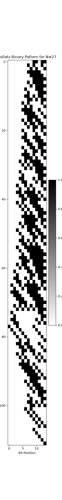
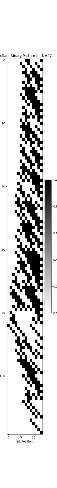
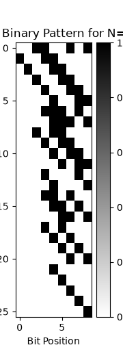

These visualizations show the binary representation of numbers as they progress through the Collatz sequence. Each row represents a step in the sequence, and each column represents a bit position. Black indicates a '1' bit, and white indicates a '0' bit.
This visualization shows the Collatz sequence for the starting number 27. Observe the patterns of shifts and expansions in the binary representation.

Another example of the Collatz sequence, starting with 97. Different starting numbers can produce vastly different visual patterns initially, yet all eventually converge.

A third example, starting with 101. These images highlight the complex, often chaotic, behavior of the Collatz sequence at a bit-wise level.

These visualizations serve to illustrate the observations made in the collatz_binary_analysis.md file, particularly the bit shifts for even numbers and the more complex transformations for odd numbers.